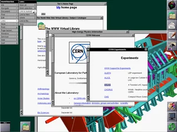

WWW
> "The World-Wide Web (W3) was developed to be a pool of human knowledge, which would allow collaborators in remote sites to share[+] “to give speeches or to perform at the same public event” [©: Cambridge Dictionary (2022). University Press] their ideas and all aspects of a common project." [©:2] [©:2] The World Wide Web — Tim Berners-Lee, Robert Cailliau, Ari Loutonen, Henrik Frystyk Nielsen, and Arthur Secret, 1994
> "A W3 “client” program [❑]  [❑] Figure 3. This is a 1993 screenshot from Tim Berners-Lee's Nexus browser, which was used to view and edit content on the World Wide Web. CERN runs on your computer. When it starts, it displays an object, normally a document with text [>] document with text. Some of the phrase[+] “a group of words that is part of, rather than the whole of, a sentence” [©: Cambridge Dictionary (2022). University Press] and images[+] “a drawing, painting, photograph, etc.” [©: Cambridge Dictionary (2022). University Press] are highlighted: in blue, or boxed, or perhaps numbered, depending on what sort of a display you have and how your preferences have been set. Clicking the mouse on the highlighted area (“anchor”) causes the client program to retrieve another object from some other computer, a “server.” The retrieved object is normally also in a hypertext [<] format[+] “the way in which information is arranged and stored on a computer” [©: Cambridge Dictionary (2022). University Press] ,(so the process of navigation continues." [©:2] [©:2] The World Wide Web — Tim Berners-Lee, Robert Cailliau, Ari Loutonen, Henrik Frystyk Nielsen, and Arthur Secret, 1994